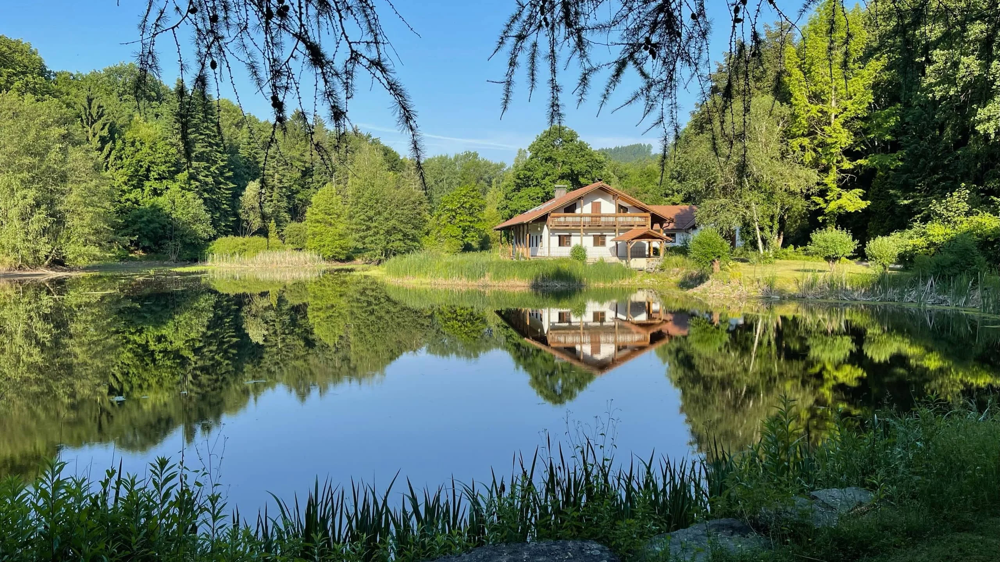
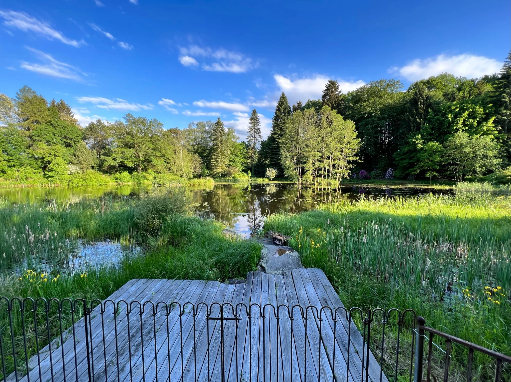
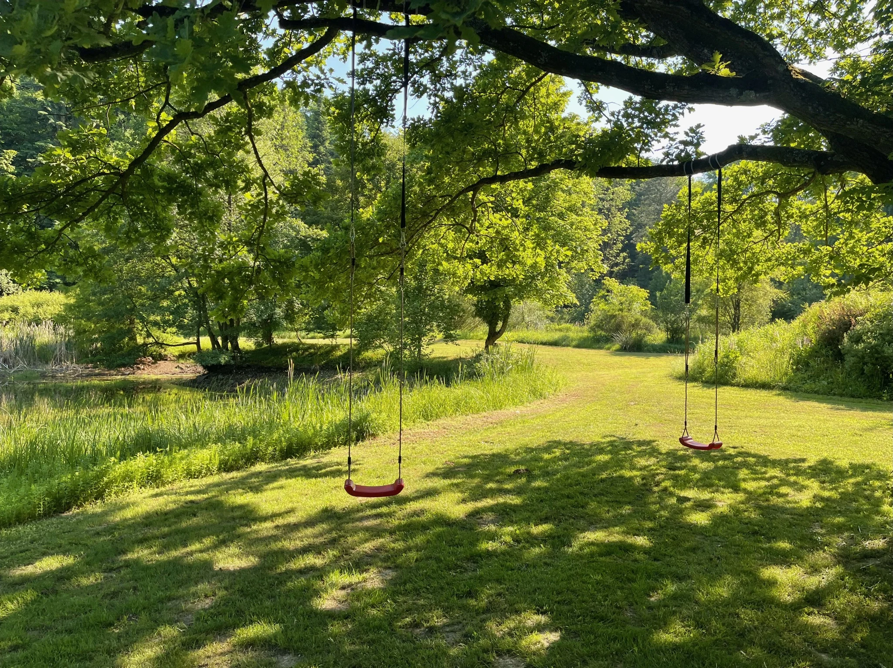
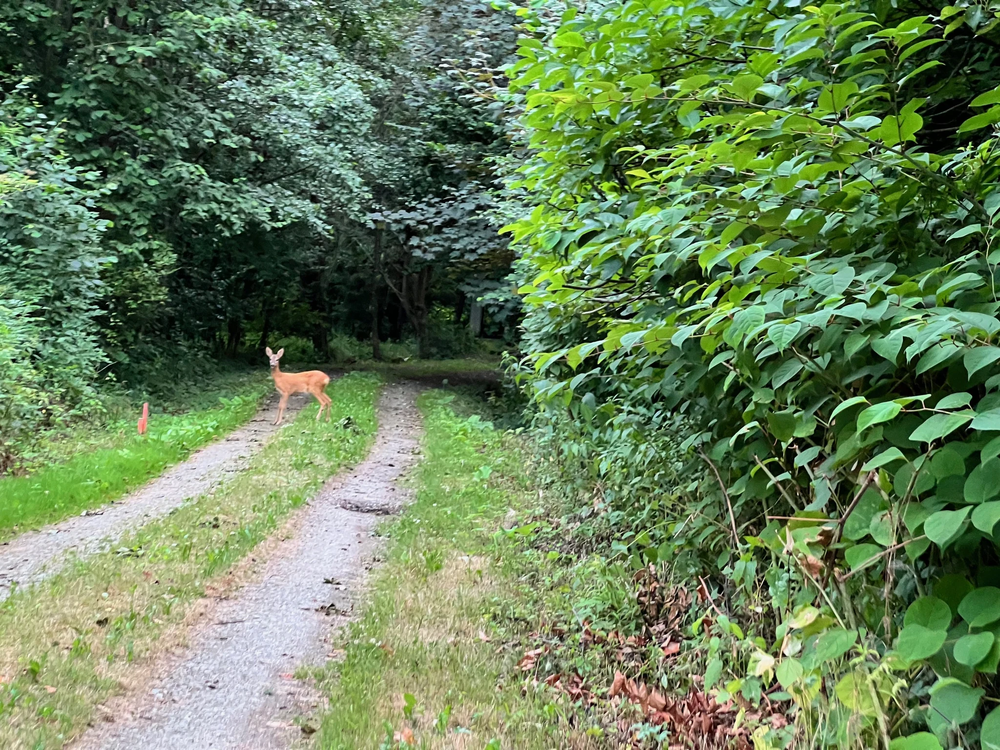
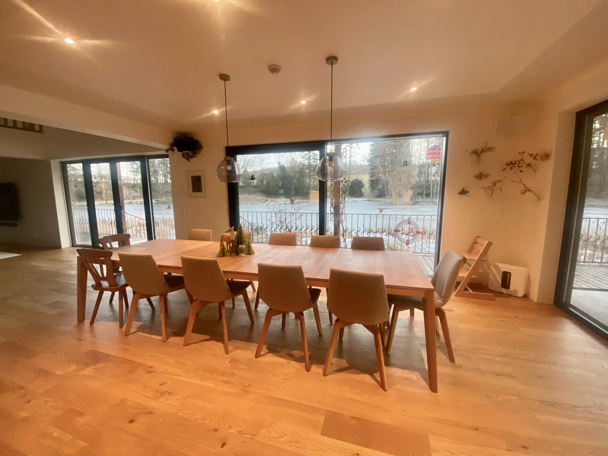
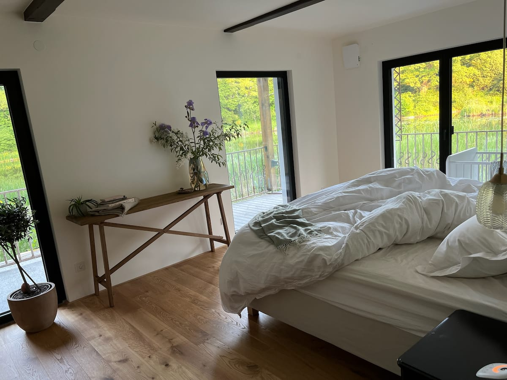
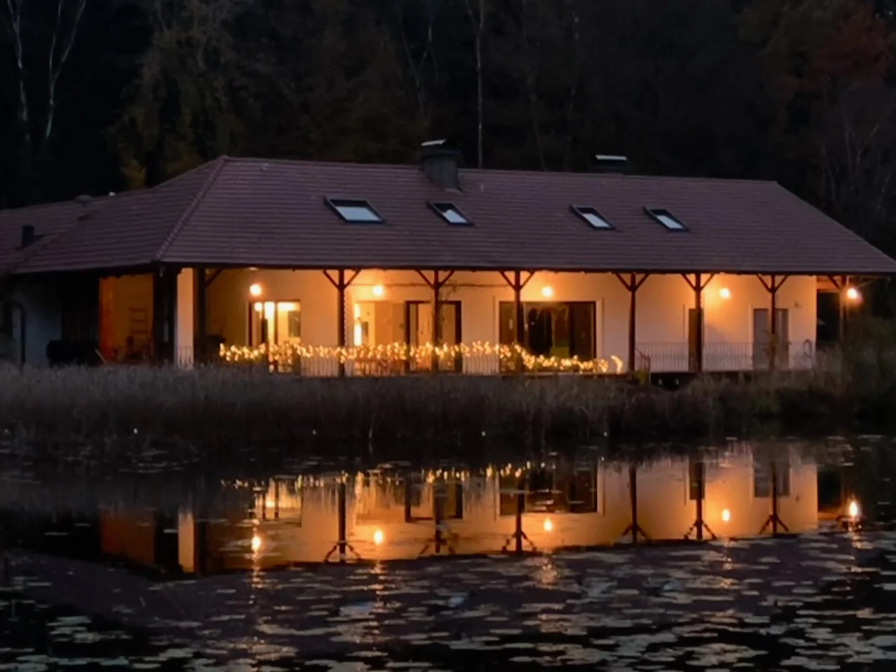

TEICHHOF · HOLIDAY HOME IN LOWER AUSTRIA
One place.
All for you.
A private pond. A house by the woods.
A place just for you.
STEINPARZ, LOWER AUSTRIA
WELCOME TO TEICHHOF
Arrive together.
Stay together.
Watch the water until your coffee goes cold. Cook together, talk for hours. And realise that nobody has checked the time all day.
Teichhof is a holiday home with a private pond in Steinparz, Lower Austria. The entire house is yours: for a family holiday, a reunion with friends or peaceful days beside the forest.

01 / LET NATURE SET THE PACE
Just
this moment.
A few strokes of the oars across the pond.
See the world from the water.
And have nothing planned for a while.

NO SCHEDULE. NO PRESSURE.
Simply
be here.

THE BEST ENCOUNTERS ARE UNPLANNED
You are a guest here.
In the heart of nature.
Deer at the edge of the woods, fish beneath the water, birds in the trees. Beavers and hares also live around Teichhof. Sometimes an otter makes an appearance.
A quiet place and a little patience. That is often all it takes to discover something here.
Wildlife follows its own rhythm. Every encounter is a gift.02 / TIME FOR THE PEOPLE WHO MATTER
The whole family.
One place together.
A birthday. A reunion. Three generations around one table. These are the days that stay with you: cooking something lovely, spending time outdoors, watching the children explore.
And when the afternoon becomes a long evening, nobody has to drive home.
Plan your escape ↗

03 / YOUR HOME AWAY FROM HOME
Room to share.
Space for yourselves.
Warm wooden floors, thoughtful details and nature outside the window. The house combines character with modern comfort. After a day together, everyone can find a quiet corner of their own.
The whole house is yours. See Airbnb for the bookable guest capacity and all details.
Check availability on Airbnb ↗GET A FEEL FOR THE PLACE
Moments at Teichhof.
Comfort indoors. Nature outside.
Find your favourite spot.
ALL YEAR ROUND
The seasons change.
The feeling stays.
MORE THAN A SUMMER RETREAT
The world outside grows quiet.
There is time within.
For long conversations. For a good book.
For days that need no plans.
MEMORIES, TOLD BY OUR GUESTS
Memories
that travel home with you.
It was exactly the right choice for a month-long summer retreat.
The pond is huge
Lara describes five days with friends and a garden that offered a whole day of discovery on its own.
a wonderful weekend
Anja Teresa stayed with grandparents, children and grandchildren, sharing time in the house, garden and by the pond.
Short excerpts from Airbnb reviews, translated from German; additional descriptions are paraphrased summaries. · Reviews on Airbnb ↗
Questions about Teichhof
Where is Teichhof?
Teichhof is in Steinparz, Lower Austria, Austria, beside woodland and a private pond. The exact address is provided with your booking.
How many rooms and beds are there?
The house has seven rooms with five double beds and two single beds, plus three bathrooms. Check the current Airbnb listing for the bookable guest capacity.
Do we book the whole house?
Yes, you book the entire property. Teichhof includes a private pond, a rowing boat and a garden.
How large is the property?
The Teichhof grounds cover over 20,000 m² – more than two hectares of space for nature and tranquillity.
How do I book?
Availability, current prices and house rules are on Airbnb. You can also ask the host about your stay or a family gathering there.

YOUR NEXT SHARED MEMORY
Your next favourite place
is waiting.
For your next family gathering. For a few quiet days.
Find your time at Teichhof.